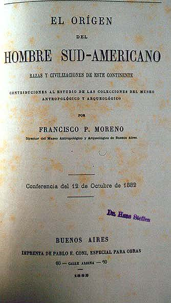

|
|  |
|
Francisco P. Moreno, El origen del hombre sudamericano (cover)
|
La Plata was not only a new kind of urbanistic project in Latin America (the construction of Belo Horizonte, the 'new' capital of Minas Gerais, began a decade later, in 1894), but also became the symbolic site of an unprecedented conjecture between 'beginnings' and 'origins' through the intervention of a group of young scientists and explorers closely associated with the new political class. The Museo de La Plata –formerly the provincial museum of anthropology, and originally intended to become the new 'national museum' seated in Buenos Aires–, which formed the core of a large scientific and leisurely complex on the new city´s perimetre, was the place where the enormous masses of 'ethnographic' booty, zoological, botanical and geological specimens, and large fossil remains from the remote and recently conquered Patagonian south arrived to be classified, recombined, displayed, and analysed, turning into the raw material of new national myths of origin. The new territories' 'fossil wealth', the splendour of the new scientific institutions, the end of an era of 'barbarism' and internal frontiers, the consolidation of state authority and the financial bonanza following from vast land sales and exploding meat exports following the introduction of 'frigoríficos', were all associated in the museum´s great evolutionary sequence into a millenary and providential narrative of Argentina's predestination to spearhead univeral progress.
|